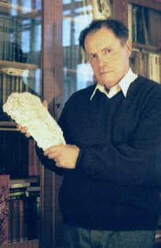
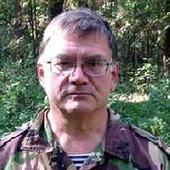
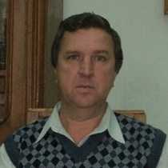
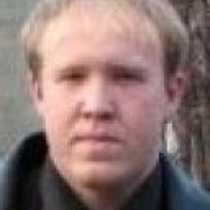
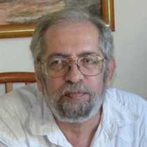

Этот сайт предназначен для ознакомления научной и вообще широкой общественности с положением дел в области исследований реликтовых гоминоидов - высокоразвитых живущих и сейчас на Земле приматов, чье существование не признается подавляющим большинством ученых.
Но не все зоологи и компетентные знатоки природы придерживаются подобного консервативного мнения. Те, кто не отмахивается от событий, как происходивших в прошлом, так и время от времени происходящих в наши дни, не могут не признать, что за ними кроется определенная реальность.
История изучения этих существ носит поистине драматический характер.
Здесь мы приведем многие свидетельства о наблюдениях за гоминоидами, сделанных как в результате полевых исследований, так и случайно непредубежденными людьми, которые уже позволяют представить их природу и образ жизни.
Сайт рекомендован министерством образования и науки РФ как факультативное пособие для основной и полной средней школы по теме "Антропология: реликтовые гоминоиды".
В Центральной и Западной Азии для названия легендарных нелюдей часто употребляются варианты слова Аламас (таинственный)
Этот дикий из мест,
Чья безвестна природа,
Хоть с людьми он и схож,
Не людского он рода.
- Низами Гянджеви -
Создание этого сайта о “снежном человеке”, по моему намерению, должно помочь широкой и научной общественности, всем интересующимся этой проблемой получить доступ к информации, заслуживающей наибольшего доверия.
Я, Михаил Самойлович Трахтенгерц, основатель сайта, более 25 лет занимаюсь изучением реликтовых гоминоидов и хочу предложить вашему вниманию сведения, которые получили поколения криптозоологов и которые позволяют определенно утверждать, что в настоящее время на Земле продолжают жить различные неизвестные антропоидные животные.
Как показали исследования митохондриальной ДНК человека в последние годы, вероятно около 400 тысяч лет тому назад в процессе становления человека был период “бутылочного горлышка”, когда численность его как вида сократилась до минимальной. Подавляющее большинство ныне живущего человечества является потомками всего одной женщины или группы сестер. Обстоятельства счастливо сложились так, что они не погибли.
Исследования реликтовых гоминоидов показывают, что многие из них сейчас, по мере распространения человека по всем уголкам нашей планеты, попали в такую же критическую ситуацию падения численности вида. От нас зависит, не будет ли для них найден выход из этого положения, или они безвозвратно исчезнут. Для этого нужно две вещи – понимание того, что они существуют независимо от нашего признания, и их природы, а также готовность к конкретным действиям.
К этим гоминоидам нельзя применить методы, используемые зоологами для других животных – отстрелять серию особей какого-либо вида и затем изучать их в камерных условиях. Насильственное умерщвление даже отдельной особи может иметь для них роковые последствия. Дж.Шаллер, Джейн Гуддол, Дайан Фосси, а в России исследователь медведей В.С.Пажетнов, и их последователи убедительно показали, что наблюдения за животными в естественной среде без изъятия из природы и, тем более, без лишения их жизни, являются наилучшими средствами их исследования. Гуманные методы изучения гоминоидов будут также освещаться на этом сайте.
К сожалению, традиционные зоология и антропология самоустранились по причинам, которые будут обсуждаться на сайте, от попыток решения этих вопросов, поставленных природой.
Активные исследования реликтовых гоминоидов ведутся более 50 лет и уже становятся достоянием истории. Сайт будет действовать в тесном сотрудничестве с Российским обществом криптозоологов. Здесь будет рассказываться об интересных сторонах происходивших событий и о последних результатах.
Несмотря на огромную территорию России, у нас фиксируется случайных наблюдений гоминоидов населением в несколько раз меньше, чем, например, в США. Это напрямую связано, на мой взгляд, с неразвитостью у нас информационных сетей и средств связи, когда жителю в отдаленной местности неизвестно, куда и как сообщить об увиденном. Сайт предоставит возможности для приема сообщений о таких наблюдениях.
Сайт создается двуязычным, информация будет на русском и английском языках. Такая структура позволит нам обмениваться содержанием с зарубежными криптозоологическими сайтами, контакты с некоторыми из них уже установлены. Это не значит, что любой материал на одном языке будет иметь перевод на другой. Наши переводческие возможности ограничены, и соотношение переведенных и одноязычных публикаций будет определяться этим.
Наш сайт является научно-просветительским, некоммерческим и поддерживается трудом и личными средствами участников. Все размещенные на нем материалы могут свободно использоваться в исследовательских и образовательных целях.
Адрес электронной почты: alamas17@yandex.ru
Родился в 1937 году. Высшее образование получил в Московском энергетическом институте, который окончил в 1961 году по специальности в области энергетических установок. Работал по этой специальности, преподавал и успешно окончил в 1968 году аспирантуру. Защитил диссертацию кандидата технических наук.
Работал в ряде НИИ. Сейчас - ведущий научный сотрудник института в Российской академии наук, специализация – теплофизика.
Одновременно устойчивое увлечение - жизнь природы и на природе. Занятие ловлей рыбы с детства и охотой с того возраста, когда можно было стать владельцем ружья. Длительные, по месяцу и дольше, путешествия, какие сейчас называются экстремальными, в малонаселенных таежных районах, по большей части на байдарках (см. их перечень). Фотографирование объектов природы.
В 70-х годах познакомился с проблемой "промежуточного звена" в происхождении человека. Пришел к возможности того, что отдельные виды этих "промежуточных звеньев" могли бы сохраниться в отдаленных районах при благоприятных для них условиях и до настоящего времени. Близкое знакомство с Ж.И.Кофман, Д.Ю.Баяновым и другими исследователями, входившими в круг последователей Б.Ф.Поршнева, укрепило эти убеждения. Короткий фильм Роджера Паттерсона и Боба Гимлина, впервые запечатлевший образ американского сасквача документально, показал, что появились и первые материалы для научного изучения этих существ. Стал активным членом Российского общества криптозоологов и избран заместителем его Председателя.
Был участником и руководителем экспедиций в районы предполагаемого обитания реликтовых гоминоидов. Своими достижениями считаю сбор сведений о таких бесспорных фактах существования реликтового гоминоида, как поимка живого существа в Саратовской области, групповое наблюдение взрослой особи с детенышем в окрестностях г.Каргополь Архангельской области, получение рисунка гоминоида в Костромской области, а также создание компьютерной базы данных о наблюдениях реликтовых гоминоидов на территории СССР и в приграничных районах. Но главным успехом для меня в этой области является реконструкция внешнего вида неизвестного до сих пор гималайского примата, выполненная на основе фотоснимков, полученных А.Тишковым в 1991 году.
Я убежденный сторонник ненасильственных методов исследования гоминоидов.
Акоев Николай Николаевич "Отчет: Мещера 3"
Акоев Николай Николаевич "О фильме Патерсона-Гимлина"
Макаров В.Ю. "Атлас следов снежного человека"
Акоев Николай Николаевич "Отчет: Тиманский вояж 4"
Акоев Николай Николаевич "Отчёт о полевой разведке «Тверь – 1»"
Иван Медведев "Лесополосы вблизи р/п Чуфарово Ульяновской области".
Трейгер Илья Яковлевич "Кто строит шалаши?"
Ашот Маргорян «Генетический анализ черепа Хвита и Заны»
Акоев Николай Николаевич "Отчет: Мещера 2"
Акоев Николай Николаевич "Отчет: Тиманский вояж 3"
Трейгер Илья Яковлевич "Антропометрия"
Трейгер Илья Яковлевич "Эксперимент по наблюдению"
Береснев Ярослав "Отчет об экспедиции".
Акоев Николай Николаевич "25 мифов о снежном человеке".
Акоев Николай Николаевич "Отчет: Тиманский вояж 2"
"Информационные материалы". Выпуск №12.
Трейгер Илья Яковлевич "К дискуссии вокруг статьи зоолога Р. Данова"
Акоев Николай Николаевич "О пироде реликтового гоминида"
Трейгер Илья Яковлевич "Отчёт о полевой разведке 1988 г."
Акоев Николай Николаевич "Реликтовый гоминид и проблема поиска"
Трейгер Илья Яковлевич "Как везти себя при встрече с Р.Г."
Трахтенгерц Михаил Самойлович "Как вести себя при встрече с реликтовым гоминоидом".
Трейгер Илья Яковлевич "Леший у Белого дома 2".
Трейгер Илья Яковлевич "Леший у Белого дома".
Акоев Николай Николаевич "Тиманский вояж (отчёт о полевой разведке в районе Тиманского кряжа)"
Акоев Николай Николаевич "Разбор полётов 3 — Откуда есть пошла «наука гоминология»".
Савин Игорь Сергеевич "Встречи со снежным человеком в Южном Казахстане и их перспективы".
Акоев Николай Николаевич "Отчёт о полевой разведке №1".
"Информационные материалы". Выпуск №11.
Арутюнов Герман Рафаилович — "О природе ужасного".
Арутюнов Герман Рафаилович — "Варианты выживания в природе – человек или йети?".
"Информационные материалы". Выпуск №10.
Акоев Николай Николаевич "Разбор полетов 2 — Стрелять или не стрелять?".
Акоев Николай Николаевич "Разборки после разбора.".
Акоев Николай Николаевич "Разбор полетов 1. — М.Г.Быкова и не только".
Кирокосьян Михаил Анатольевич "Дикий человек" в Северном Прикаспии".
Любушкин Андрей Евгеньевич "Йети на Южном Урале: хроника наблюдений".
"Обновленный вариант статьи М.С.Трахтенгерца "Неизвестный примат Гималаев".
"Информационные материалы". Выпуск №9.
Гашев Сергей Николаевич "О ПРОБЛЕМЕ «СНЕЖНОГО ЧЕЛОВЕКА» В ТЮМЕНСКОЙ ОБЛАСТИ".
Акоев Николай Николаевич "Реликтовый гоминид (Р.Г.) или леший и тайна перевала Дятлова".
Сутягин Сергей Владиленович "Снежный человек в мировом фольклоре".
"Информационные материалы". Выпуск №8.
Фокин Анатолий Геннадиевич. — "Вятский леший" (из архива М.Трахтенгерца).
Байбак Юрий Васильевич - "Путь к контакту со снежным человеком".
Байбак Юрий Васильевич - "Лесные конструкции".
Байбак Юрий Васильевич - "Самый большой след".
Байбак Юрий Васильевич - "В лесу".
Строганов Андрей Николаевич, к.б.н. - "Новое об анотомии снежного человека".
"Информационные материалы". Выпуск №7.
"Информационные материалы". Выпуск №6.
Фокин Анатолий Геннадиевич. — "Как йети съел лося".
Бурцев Игорь Дмитриевич, к.и.н. — "Об исследовании фильма Паттерсона в России".
Акоев Николай Николаевич, зоолог. — "Реликтовый гоминид (леший) и когнитивная этология".
Сапунов Валентин Борисович, д.б.н., профессор. — "Зачем нужно изучать снежного человека?"
Трейгер Илья Яковлевич. — "Телепатия или не телепатия".
Акоев Николай Николаевич, зоолог. — "Реликтовый гоминид (леший) и членораздельная речь".
Виноградов Анатолий Валентинович, к.б.н. — "Реальный обезьяночеловек алмасты".
Виноградов Анатолий Валентинович, к.б.н. — "Новый вид шимпанзе — гигантский".
Акоев Николай Николаевич, зоолог. — "Реликтовый гоминид (леший) и лесная архитектура".
Фокин Анатолий Геннадиевич. — "Снежный человек - это тоже человек".
Виноградов Анатолий Валентинович, к.б.н. — "Cистематика современного дикого человека".
Колтовой Николай Алексеевич, к.ф-м.н. — "Снежный человек".
Акоев Николай Николаевич, зоолог. — "Некоторые особенности походки реликтового гоминида (леший)".
Строганов Андрей Николаевич, к.б.н. — "Полевые гоминологические экспедиции".
Акоев Николай Николаевич, зоолог. — "О следах гоминида (леший) в Подмосковье".
В этом разделе собраны сообщения о встречах с реликтовыми гоминоидами, результатом которых было получение фактических материалов (рисунки, фотографии и др.) и важной информации.
Последние сообщения:
Отклик на него профессора В.Б.Сапунова
Эта же книга в формате PDF, более удобная для чтения и скачивания
Заметки автора в связи с собственной книгой
Публикация Александры Бурцевой о гоминоидах на Чукотке (1978 год).
Книга Ильи Гурвича "Таинственный чучуна" об исследованиях на Северо-Востоке Сибири, 1975 год
Комментарий к этой публикации Михаила Трахтенгерца
Статья Ростислава Данова "О находке зуба неизвестного примата" (1996 год).
Вадим Макаров представил второе, существенно расширенное, издание своего "Атласа снежного человека"
Статья Вадима Макарова об исследованиях волос, предположительно принадлежащих реликтовым гоминоидам.
Исследование В.Макарова и М.Трахтенгерца "Загадка рисунка кавказского алмасты"
Обзорная статья Георгия Сидорова о гоминоидах Сибири с предисловием Дмитрия Баянова, 1993г.
Читатель из Австралии Б.Спайби (B.Spiby) прислал свой выразительный рисунок головы аламаса
Описание обстоятельств встречи.
Отклик на нее известного криптозоолога Джона Грина, США.
Статья М.Трахтенгерца "Область обитания приматов вида аламас".
Статья М.Трахтенгерца "Оценка размеров внешнего облика гималайских гоминоидов"
Опубликована статья М.Трахтенгерца "Следы четырехпалых гималайских гоминид"
Опубликована статья М.Трахтенгерца "Гималайский снимок Э.Шиптона - новый анализ следа"
Статья М.Трахтенгерца, обобщающая сведения о крупном гоминоиде в Гималаях
Опубликована статья М.Трахтенгерца "Об одном типе следов гималайских гоминид"
Отклик на нее итальянского криптозоолога Лоренцо Росси
Сообщение о новых исследованиях ДНК американского бигфута, подготовил Михаил Трахтенгерц
Приводятся дополнительные интересные материалы о сумеречном свечении глаз у людей
Эрик Кнаттеруд из Норвегии сообщил о наблюдении сумеречного свечения глаз у сасквача (Америка)
Ещё о сумеречном свечении глаз у гоминоидов - Австралийский йяуи
Бобби Шорт и Вил Данкен: Американский бигфут имеет ДНК, идентичную человеческой
Представлен сборник докладов, прочитанных на этой конференции
Сообщение о невраждебном контакте человека и гоминоида в Кабардино-Балкарии
Филипп Кудрэ прокомментировал статью Девида Клера
Видео интервью очевидца Виталия Борчаева, цитируемое из телевизионной программы ТНТ
О находке большого числа следов гоминоидов на отмелях в нижнем течении Оби
Предварительное сообщение об экспедиции Григория Панченко на Северный Кавказ
Впечатления о ней участника Анатолия Сидоренко
Михаил Кирокосьян представил свою статью о недавних наблюдениях гоминоидов в низовьях Волги
Статья М.А.Кирокосьяна: "Дикий человек" в Северном Прикаспии
Встречи с неизвестным зоолога Н.К.Верещагина в Азербайджане
Игорь Бурцев представил свою статью о наблюдении гоминоидов в Северо-Западных районах России
Из переписки Дмитрия Баянова с Дугласом Таррантом (США) о наблюдениях бигфутов
Европейская философская мысль о соотношении "дикости" и цивилизации
Проявления памяти о "диком человеке" в некоторых областях Европы
Подробности наблюдения гоминоида во время охоты в Костромских лесах в 1989 году
Сообщение о находке большой группы следов сасквача в штате Орегон
Игорь Бурцев предоставил свою статью об активизации поисков гоминоидов в Сибири
Исследователь Дейв Паулидес прислал ссылку на видео ролик с шагающей вертикально гориллой
Бигфут изгоняет вторгнувшихся на его территорию (Британская Колумбия, Канада)
Бигфут помогает охотнику (штат Вашингтон, США)
Случай длительного дружественного контакта с бигфутом в Америке
Письмо о длительном наблюдении за бигфутами в Америке, полученное от исследователя Даниеля Переца
Статья 1999 года с риторическим вопросом Существует ли, в конце концов, “дикий человек”?
Экспедиции французских криптозоологов в поисках мокеле-мбембе
Алексей Мухин рассказал о встречах с неизвестным животным в Брянской области
Неизвестную рептилию увидели далеко за Полярным кругом
В центре Европы еще можно встретить гоминоида - наблюдение в Косово
Об открытии нового вида обезьян в Африке
О наблюдении неизвестных гориллоподобных приматов в Конго
Наблюдение, которое трудно себе представить - гоминоида встретили в Великобритании.
ПИСЬМА НАШИХ ЧИТАТЕЛЕЙ
Журнал "Природа и человек" опубликовал интервью с Михаилом Трехтенгерцем о гоминоидах
Из переписки Дмитрия Баянова и Владимира Ямщикова
Отклик А.В. и Е.Ю. Виноградовых на статью Дмитрия Баянова
Ответ Дмитрия Баянова на письмо А.В. и Е.Ю. Виноградовых
Эрик Кнаттеруд из Норвегии сообщил мне о наблюдении сумеречного свечения глаз у сасквача (Америка)
Предложения-рекомендации Рона Морехэда для полевых исследователей гоминоидов
Вадим Макаров обсуждает вопрос "О разуме, языке и мышлении животных и реликтовых гоминоидов"
Отклики на статью "Об открытии нового вида обезьян в Африке"
Отклик Ильи Трейгера на статью о снимке Э.Шиптона.
Отклик Оливера Декоберта, Франция, на статью о снимке Э.Шиптона.
Отклик на статью о снимке Э.Шиптона криптозоолога Джона Грина, США.
Ископаемые гоминиды
На этих сайтах информация о гоминоидах является основной или существенной частью:
Форум Дмитрия Ершова о китайском гоминоиде ежене и других криптозоологических животных в Китае
Техасский центр исследований бигфута в США Texas Bigfoot Research Center
Сайт гоминолога Жана Роше Jean Roche, материалы на французском и английском языках.
Сайт Даниэля Переца, Калифорния, США, издателя бюллетеня BIGFOOT TIMES
Новый криптозоологичексий сайт Максима Волченкова с развитым форумом
Обширный сайт, рассказывающий о рептилиях и прежде всего о змеях, англ.
Сайт Лорена Колемана, США, автора нескольких книг на криптозоологические темы, англ.
Сайт итальянского криптозоолога Lorenzo Rossi, ита.
Действующие исследователи снежного человека в России XXI века, преставленные на сайте:
Зоолог. Активный участник Смолинского семинара с 1970 года. Автор ряда статей, докладов и выступлений. Ведет активную полевую работу.
Координатор сайта www.alamas.ru
Телефон:8-916-963-83-79
E-mail: alamas17@yandex.ru
Список материалов
Литератор, лауреат областного конкурса Союза журналистов СССР, член Союза журналистов СССР (с 1982г.)
Московского Союза литераторов (с 2000г.) и Союза писателей России (с 2010 г.) Автор нескольких книг и сотен статей в самых разных изданиях на темы предназначения человека, загадок природы, искусства и творчества. По образованию -
журналист (факультет журналистики Московского университета), искусствовед (народный Университет культуры, лекторская школа МГУ).
Телефон:8-909-934-17-08
Сайт в Интернете: герман-арутюнов.рф
E-mail: german155@mail.ru
Математик по образованию, училась в МЭИ, работаю программистом в академическом институте.
Увлекаюсь водным и пешим туризмом, участвовала в волонтерских работах на Соловках, занималась в фольклорной студии.
Темой леших интересуюсь очень давно, но серьезным исследованием была вынуждена заняться после того, как обнаружила маркер леших в лесу возле своей дачи в Тверской области в октябре 2018г.
irbelo223@mail.ru
Доктор биологических наук, профессор, академик РАЕ. Заведующий кафедрой зоологии и эволюционной экологии животных Тюменского государственного университета. Автор следующих статей по криптозоологии: "О проблеме "Снежного человека" в Тюменской области".
Главный специалист Комитета по образованию и науке администрации гор. Астрахани. Образование: высшее (окончил в 1982 г. Астраханский педагогический институт им. С.М. Кирова, специальность: география-биология). Научная деятельность: по топонимии Астраханской области, истории Прикаспия и Каспийской флотилии в XVII–XIX вв.
Руководитель РГ "Челябинск - Космопоиск".
Автор статьи по криптозоологии: "Йети на Южном Урале: хроника наблюдений".
Сайт: www.uralcosmo.ru
Этнограф, кандидат исторических наук (Институт этнологии и антропологии РАН), старший научный сотрудник, заведующий сектором Центральной Азии Центра изучения Центральной Азии, Кавказа и Урало-Поволжья Института востоковедения РАН. Руководитель и участник десятков исследовательских и прикладных проектов посвященных этническому разнообразию стран Центральной Азии и интеграции разнокультурных сообществ в современной России.
Родился в 1951-м году в г. Москва. Врач. Участник Смолинского семинара с 1981-го года. До 1993-го года работал практическим врачом в Москве (нейрохирургия, челюстно-лицевая хирургия, стоматология). С 1993-го года живет и работает в
Вашингтоне (США) – Патентный эксперт (хирургия). Физиолог. Ph.D. in biology.
Автор следующих статей по криптозоологии: "Телепатия или не телепатия". "Эволюция реликтового гоминида (леший) и проблема внутривидовой коммуникации".
"Срок отделения человека от предка должен определяться критерием, выделяющим человека как новый вид"
С нами можно связаться: alamas17@yandex.ru
© 2002-2017 М.С.Трахтенгерц, все права сохранены. Любой материал этого сайта может быть использован без специального разрешения лишь для образовательных и исследовательских целей с обязательной ссылкой на этот сайт.